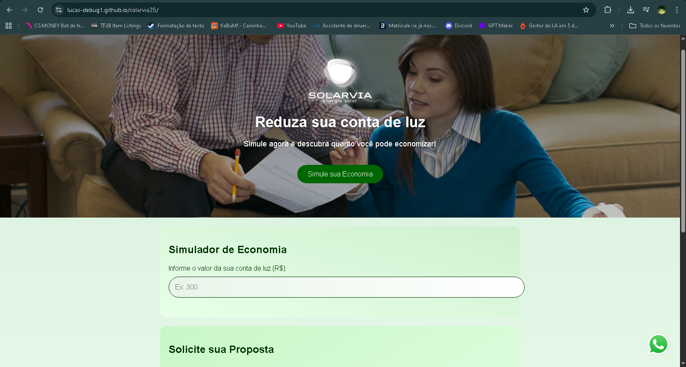
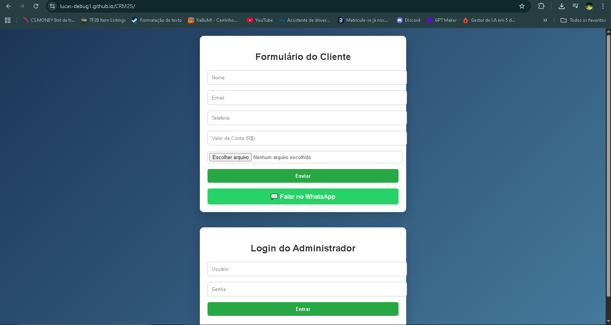

Projetos

Sistema de Atendimento com IA
Plataforma de gestão de agentes inteligentes para atendimento automatizado e integração de canais.

Plataforma Solarvia
Sistema web com calculadora de economia de energia solar e captação de leads.
Ver Projeto
CRM de Leads
Sistema CRM completo com cadastro de clientes e painel administrativo.
Ver Projeto